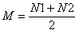
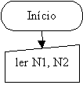
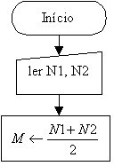
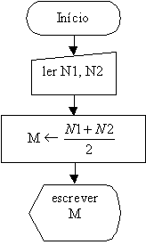
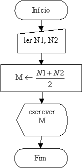

Exemplos Práticos de Construções de Lógicas e Fluxogramas
Exemplo 2:
Calcular a média aritmética de duas notas de um aluno.
Uma média aritmética é calculada da seguinte forma:

N1
e N2 são as notas do aluno.
No mundo real fazemos o seguinte:
- Procuramos saber quais são as duas notas do aluno;
- Efetuamos a soma das duas notas e guardamos o resultado em algum lugar(memória, anotamos em um papel etc.);
- Mostramos o resultado a quem possa interessar.
Arrumando os conceitos acima dentro da terminologia da programação, teremos:
Entrada de Dados:
Fornecimento, pelo usuário, das duas notas que serão utilizadas para o cálculo da média.
Processamento:
Cálculo da Média.
Saída de Dados:
Impressão da Média.
O FLUXOGRAMA:
- Iniciamos o fluxograma.
- A seguir temos a entrada dos dados, suponhamos que ela será digitada pelo usuário, os valores a serem digitados são desconhecidos, por isso eles deverão ser simbolizados por letras:
- Realizamos o cálculo da média e atribuímos o resultado à letra "M", além disto, um cálculo é uma operação interna do computador, por isto é um processamento:
- Em seguida mostramos o resultado no monitor do usuário:
- Indicamos o fim do fluxograma.





Se você não lembra o significado dos símbolos utilizados, então clique aqui.
Comentários:
- Observe que este problema é diferente do primeiro, porém sua estrutura lógica é igual.
- No fluxograma acima foi utilizada a notação de fração para o cálculo da média, isto mostra que a linguagem expressa na construção da lógica é livre, apenas procurando manter a clareza necessária para a compreensão do desenvolvimento lógico do problema. No entanto, alguns professores defendem que a linguagem computacional deverá ser utilizada, posição que não concordo, pois o código que representa uma função em uma linguagem de programação poderá representar outra função em uma linguagem diferente, tornando o fluxograma construído ligada àquela linguagem e não uma lógica geral.
| Página Anterior | Próxima Página |